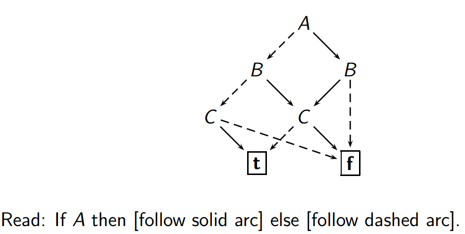

Models of Computations
Summary is written by Xiao Liang Yu.
This summary might include material that was created by my dear lecturer Harald Søndergaard.
This document might contain some personal but controversial opinions (might be mine or Harald's).
While most of the content is correct, it's possible that this document contains incorrect content. If you find one, please let me know by making a pull request or comment. :)
[TOC]
$$ \newcommand{\union}{\cup} \newcommand{\inter}{\cap} \newcommand{\natural}{\mathbb{N}} \newcommand{\powerset}{\mathcal{P}} \newcommand{\integer}{\mathcal{Z}} $$
Haskell
This section is meant to be a complement to my DP-Summary.
Prelude code: https://www.haskell.org/onlinereport/haskell2010/haskellch9.html
==>:implies/only if
<=>:if and only if
<+>:exclusive or
Useful functions for this subject
-
all :: (a -> Bool) -> [a] -> Bool-
allis similar toand.map
-
Propositional Logic
General Terminology
- conjunction : $P \land Q$
- disjunction : $P \lor Q$
- connectives : $\neg, \lor, \land, \implies, \iff, \oplus$
- propositional letters : $A, B, C, ... Z$ (upper case)- nand : $\uparrow$
- nor : $\downarrow$
- valid : no truth assignment makes it
false - non-valid : there exists at least one truth assignment to make it
false - unsatisfiable : no truth assignment makes it
true - satisfiable : there exists at least one truth assignment to make it
true - tautology : a valid propositional formula
- contradiction : a unsatisfiable propositional formula
- substitution : replace propositional letters by formulas
- interchange of equivalents : replace a formula with another formula
- decidability :
- clause : a set (disjunction) of literals
- clausal form : TODO
- conjunctive normal form (CNF) : a conjunction of disjunctions of literals (a conjunction of clauses)
- reduced CNF (RCNF) : CNF formula that is in RCNF if for each of its clauses, no propositional letter occurs twice
- disjunctive normal form (DNF) : a disjunction of conjunctions of literals
- canonical form : a normal form leads to a unique representation for every Boolean function called canonical.
- Bottom : $\bot$- any unsatisfiable formula
- Top :$\top$- anby valid formula
Concepts
- model
- Let $\theta$ be a truth assignment and $\phi$ be a propositional formula. If $\theta$ makes $\phi$
truethen $\theta$ is a model of $\phi$.
- Let $\theta$ be a truth assignment and $\phi$ be a propositional formula. If $\theta$ makes $\phi$
- Logical consequence
- $\Psi$ is a logical consequence of $\phi$ iff every model of $\phi$ is a model of $\Psi$ as well -> $\phi \vDash \Psi$
- If $\phi \vDash \Psi$ and $\Psi \vDash \phi$ both hold, that is, $\phi$ and $\Psi$ have exactly the same models, then $\phi$ and $\Psi$ are (logically) equivalent. -> $\phi \equiv \Psi$
- every propositional formula can be expressed in CNF and DNF
- A clause $\{A,B\}$ represents $A \lor B$
- Empty clause $\varnothing$ represent $\bot$
- Formula $\{C_1, C_2\}$ represents $C_1 \land C_2$
- Empty formula $\varnothing$ represents $\top$
- Xor normal form is canonical which presents the function in a sum-of-products form using exclusive or and conjunction
- Binary decision diagrams (BDD) gives canonical form when we enforce maximal sharing of subgraphs (and agree on an ordering of variables) - called ROBDD - a reduced, ordered BDD 
- A propositional formula is valid $\iff$ its ROBDD is the single-leaf graph $t$
- A propositional formula is unsatisfiable $\iff$ its ROBDD is the single-leaf graph $f$
- An empty set of clauses is valid, because it is trivial to satisfy all of the set’s clauses—there is nothing to do
- a (non-empty) set that contains an empty clause cannot be satisfied, because nothing satisfies that empty clause
- $\phi \vDash \Psi$ iff $\phi \land \neg \Psi$ is unsatisfiable
- A formula is unsatisfiable $\iff$ its negation is valid
Resolution
Resolvent
Let $C_1$ and $C_2$ be clauses such that $P \in C_1$ and $\neg P \in C_2$. $(C_1 \{P\}) \cup (C_2 \{\neg P\})$ is a resolvent of $C_1$ and $C_2$.
Theorem : If $R$ is a resolvent of $C_1$ and $C_2$ then $C_1 \land C_2 \vDash R$.
As a way to verify that a CNF formula is unsatisfiable
If we derive the empty clause $\bot$, then the original set of clauses were unsatisfiable.
As a way to verify that a CNF formula is valid
We first negative the formula, then use resolution to try deriving $\bot$. If the negated formula is unsatisfiable, then the original formula is valid.
Resolution deduction
A resolution deduction of clause $C$ from a set $S$ of clauses is a finite sequence $C_1, C_2, ... , C_n$ of clauses such that $C_n = C$ and for each $i, 1 \ge i \ge n$, $C_i$ is either a member of $S$ or a resolvent of $C_j$ and $C_k$, for some $j,k < 1$.
A resolution refutation of a set $S$ of clauses is a resolution deduction of $\bot$ from $S$.
Converting formula
to CNF or to DNF
- Eliminate all occurrences of $\oplus$ using $A \oplus B \equiv (A \lor B) \land (\neg A \lor =neg B)$
- Eliminate all occurrences of $\iff$ using $A \iff B \equiv (A \implies B) \land (B \implies A)$
- Eliminate all occurrences of $\implies$ using $A \implies \equiv \neg A \lor B$
- Use De Morgan's Laws to push $\neg$ inward over $\lor$ and $\land$
- Eliminate double negations using $\neg\neg A \equiv A$
- Use the distributive laws to get the required form
Equivalences
- Absorption
- $$P \land P \equiv P$$
- $$P \lor P \equiv P$$
- Commutativity
- $$P \land Q \equiv Q \land P$$
- $$P \lor Q \equiv Q \lor P$$
- Associativity
- $$P \land (Q \land R) \equiv (P \land Q) \land R$$
- $$P \lor (Q \lor R) \equiv (P \lor Q) \lor R$$
- Distributivity
- $$P \land (Q \lor R) \equiv (P \land Q) \lor (P \land R)$$
- $$P \lor (Q \land R) \equiv (P \lor Q) \land (P \lor R)$$
- Double negation
- $$P \equiv \neg\neg P$$
- De Morgan
- $$\neg (P \land Q) \equiv \neg P \lor \neg Q$$
- $$\neg (P \lor Q) \equiv \neg P \land \neg Q$$
- Implication
- $$P \implies Q \equiv \neg P \lor Q$$
- Contraposition
- $$\neg P \implies \neg Q \equiv Q \implies P$$
- $$P \implies \neg Q \equiv Q \implies \neg Q$$
- $$\neg P \implies Q \equiv \neg Q \implies P$$
- Biimplication +$$P \iff Q \equiv (P \land Q) \lor (\neg P \land \neg Q)$$
Priority
$\neg$ binds tighter than $\land$ and $\lor$. These bind tighter than $\oplus$, which binds tighter than $\implies$ and $\iff$.
Side points
- In logic, valid means vacuous (void of information)
- $A$ if $B$ means that $B \implies A$
- $A$ only if $B$ means that $A \implies B$
- $A$ if and only if $B$ means that $A \equiv B$
Predicate logic
General Terminology
- Existential quantification (there exists) : $\exists$
- Universal quantification (for all) : $\forall$
- the arity of a function/predicate : a number that says how many arguments the function takes
- literal : an atomic formula or its negation
- valuation : a function which maps truth value to variables
Concept
- term - $f(t_1, ..., t_n)$
- definition : a variable or a constant or a construction
- when $n > 0$, $f$ is a function symbol of arity $n$, and each $t_i$ is a term
- a term is an individual or object
- atomic formula (or atom)
- a construction $P(t_1, ..., t_n)$ where $n \ge 0$ and $P$ is a predicate symbol of arity $n$
- an atom is an assertion ($true$ or $false$)
- variable
- a variable which is in the scope of a quantifier is bound. Otherwise, it's free
- TODO variable that is both free and bound in a formula
- a formula with no free variable occurrences is closed
- interpretation
- Consists of
- Non-empty set $D$ (the domain, or universe)
- An assignment to each n-ary predicate symbol $P$ of an n-place function $p : D^n \rightarrow \{f, t\}$
- An assignment to each n-ary function symbol $g$, of an n-place function $g : D^n \rightarrow D$
- An assignment to each constant $a$ of some fixed element of $D$
- A wff $F$ is true interpretation I iff every valuation makes $F$ true. If not true then it is false in interpretation $I$
- A model for F is an interpretation I such that F is true in I. We write $I \vDash F$.
- A wff $F$ is logically valid iff every interpretation is a model for $F$. In that case, we write $\vDash F$
- $F_2$ is a logical consequence of $F_1$ iff $I \vDash F_2$ whenever $I \vDash F_1$. We write $F_1 \vDash F_2$
- $F_1$ and $F_2$ are logically equivalent iff $F_1 \vDash F_2$ and $F_2 \vDash F_1$. We write $F_1 \equiv F_2$
- Consists of
- Satisfiability and Validity
- A closed wff $F$ is:
- satisfiable iff $I \vDash F$ for some interpretation $I$
- valid iff $I \vDash F$ for every interpretation $I$
- unsatisfiable iff $I \nvDash F$ for every interpretation $I$
- non-valid iff $I \nvDash F$ for some interpretation $I$
- A closed wff $F$ is:
Side points
- Usually use $\implies$ with $\forall$ and $\land$ with $\exists$
- $\forall x \exists y$ is not same as $\exists y \forall x$
- $\forall x \forall y$ is same as $\forall y \forall x$ and $\exists x \exists y$ is same as $\exists y \exists x$
- $\exists x F \equiv \neg \forall x \neg F$
Finite State Machine
A finite automation is a 5-tuple $(Q, \Sigma, \delta, q_0, F)$
$Q$ is a finite set of states $\Sigma$ is a finite alphabet $\delta: Q \times \Sigma \rightarrow Q$ is the transition function; For DFA, this should be a total function $q_0 \in Q$ is the start state $F \subseteq Q$ are the accept states (it's a set)
An alphabet $\Sigma$ can be any non-empty finite set. The elements of $\Sigma$ are the symbols of the alphabet. A string over $\Sigma$ is a finite sequence of symbols from $\Sigma$. Concatenation of a string $y$ to a string $x$ is represented by $xy$. The empty string is denoted by $\epsilon$.
Deterministic Finite Automation (DFA)
Properties
- We can test whether two DFAs are equivalent by minimizing them
Non-deterministic Finite Automation (NFA)
Properties
- Every NFA has an equivalent DFA
- DFA corresponding to a NFA having $n$ states has at most $2^n$ states
$\epsilon$ transition
Used to move from one state to another without consuming input. Useful to represent Union of two languages
Convert to minimal DFA
TODO
Steps:
-
Reverse the NFA If NFA starts
-
Determinize the result
-
Reverse again
-
Determinize
Pushdown Automata
A pushdown automata is a finite-state automation, equipped with a stack.
A 6-tuple $(Q, \sigma, \Gamma, \delta, q_0, F)$ where $Q$ is a finite set of states $\sigma$ is the finite input alphabet $\Gamma$ is the finite stack alphabet $\delta : Q \times \sigma_{\epsilon} \times \Gamma_{\epsilon} \rightarrow P(Q \times \Gamma_{\epsilon})$ $q_0 \in Q$ is the start state $F \subseteq Q$ are the accept states
When the machine stops, the stack can be non-empty no matter it accepts. Trying to pop an empty stack leads to rejection of input.
The stack and input are separated.
When the PDA accepts, the input must be empty.
Language
A language over alphabet $\Sigma$ is a set of finite strings over $\Sigma$. $\Sigma^*$ denotes the set of all finite strings over $\Sigma$.
Let say $M_1$ is an automation. $L(M_1)$ is the language recognized by $M_1$.
Regular language
A language is regular iff there is a finite automation that recognizes it.
Regular operation
- Union $A \cup B$
- Concatenation $A \circ B = \{xy \mid x \in A, y \in B\}$
- Kleene Star $A^* = \{x_1x_2...x_k \mid k \ge 0, \text{ each } x_i \in A\}$
- empty string $\epsilon$ is always in $A$
The regular languages are closed under the regular operations.
Pumping lemma for proving non-regular
If $A$ is regular then there is a number $p$ such that for any string $s \in A$ with $|s| \ge p$, $s$ can be written as $s = xyz$ satisfying: $$xy^iz \in A \text{ for all } i \ge 0$$ $$y \ne \epsilon$$ $$|xy| \le p$$
We call $p$ the pumping length.


Context-Free Languages
A language which can be generated by some context-free grammar is a context-free language(CFL).
Context-Free Grammar
The language of Grammar $G$ is written as $L(G)$.
A 4-tuple $(V, \sigma, R, S)$ where $V$ is a finite set of variables $\sigma$ is a finite of terminals $R$ is a finite set of rules, each consisting of a variable and a sentential form $S$ is the start variable
Parse Tree
A grammar that has different parse tree for some sentence is ambiguous.
Sometimes we can find a better grammar which is not ambiguous and generates the same language. But, it's not always possible, some context-free languages are inherently ambiguous.


Pumping lemma for proving non-context-free
If $A$ is context-free then there is a number $p$ such that for any string $s \in A$ with $|s| \ge p$ , $s$ can be written as $s = uvxyz$ satisfying:
$$uv^ixy^iz \in A \text{ for all } i \ge 0$$ $$|vy| > 0$$ $$|vxy| \le p$$
Regular expression
The regular expressions over an alphabet $\sigma = \{a_1, ..., a_n\}$ is given by the grammar $regexp \rightarrow a_1 | ... | a_n | \epsilon | \emptyset | regexp \union regexp | regexp regexp | regexp^*$.
Language recognized by regular express $R$ is expressed as $L(R)$.
Semantics: $$L(a) = \{a\}$$ $$L(\epsilon) = \{\epsilon\}$$ $$L(\emptyset) = \epsilon$$ $$L(R_1 \union R_2) = L(R_1) \union L(R_2)$$ $$L(R_1 R_2) = L(R_1) \circ L(R_2)$$ $$L(R^) = L(R)^$$
$L$ is regular iff $L$ can be described by a regular expression.
Regular expressions from NFAs
Make the NFA to have only one accept state. You can add one more state, and make current accepting states have an $\epsilon$ transition to it.
Function
Surjective (or Onto)
A function $f \colon X \to Y$ is surjective iff $f[X] = Y$.
Injective (or One-to-one)
A function $f \colon X \to Y$ is injective iff $f(x) = f(y) \Rightarrow x = y$.
Bijective
A function $f \colon X \to Y$ is bijective iff $f$ is both surjective and injective.
Composition
$f \colon X \to Y$ and $g \colon Y \to Z$ is the function $g \circ f \colon X \to Z$ defined by $(g \circ f)(x) = g(f(x))$. Composition makes sense as long as $ran(f) \subseteq dom(g)$. For function composition $g \circ f$, it's best read as "$g$ after $f$".
Memorize Let $f \colon X \to Y$ and $g \colon Y \to Z$. $$g \circ f \text{ is injective } \implies f \text{ is injective}$$ (Harder to memorize) $$g \circ f \text{ is surjective } \implies g \text{ is surjective}$$ (Harder to memorize) $$g, f \text{ are injective } \implies g \circ f \text{ is injective}$$ $$g, f \text{ are surjective} \implies g \circ f \text{ is surjective}$$
$\circ$ is associative. For $f \colon X \to Y$, $f \circ 1_x = 1_y \circ f = f$.
Identity function
For a set $X$, $1_{X} \colon X \to X$ is the identity function on $X$.
Partial function
We write $f \colon X \hookrightarrow Y$ to say that $f$ has a domain which is a subset of $X$($f(x)$ might be undefined for some $x \in X$).
Total function
A total function $f \colon X \to Y$ is a special case of partial function which has $f(x)$ defined for each $x \in X$.
Image and co-image
Let $A \subseteq X, B \subseteq Y$, and consider $f : X \rightarrow Y$. $f[A] = \{f(x) \mid x \in A\}$ is the image of $A$ under $f$. $f^{-1}[B] = \{x \in X \mid f(x) \in B\}$ is the co-image of $B$ under $f$.
Inverse Function
Given $f \colon X \to Y$, a function $g \colon Y \to X$ is its inverse iff $g \circ f = 1_X$ and $f \circ g = 1_Y$.
An inverse function, if it exists, is unique. A function has an inverse function iff it's bijective.
If $f \colon X \to Y$ is a bijection, we denote its inverse by $f^{-1} \colon Y \to X$.
Set
A set is a collection into a whole of definite, distinct objects of our intuition or of our thought. The objects are called the elements (members) of the set.
$a \in A$ expresses that $a$ is a member of $A$.
Properties
- Empty set $\emptyset \subseteq A$ for every set $A$.
- A set with just a single element is a singleton
- A set with two elements is a pair
- $A \cap B = \{x \mid x \in A \land x \in B\}$ (intersection)
- $A \cup B = \{x \mid x \in A \lor x \in B\}$ (union)
- $A \ B = \{x \mid x \in A \land x \not\in B \}$ (difference)
- $A \oplus B = \{ (A \ B) \cup (B \ A) \}$ (symmetric difference) (TODO)
- If the universal set $X$ is defined, $A^c = X \ A$ is the complement of $A$
Laws
Absorption
$$A \cap A = A$$ $$A \cup A = A$$
Commutativity
$$A \cap B = B \cap A$$ $$A \cup B = B \cup A$$
Associativity
$$A \cap (B \cap C) = (A \cap B) \cap C$$ $$A \cup (B \cup C) = (A \cup B) \cup C$$
Distributivity
$$A \cap (B \cup C) = (A \cap B) \cup (A \cap C)$$ $$A \cup (B \cap C) = (A \cup B) \cap (A \cup C)$$
Double complement
$$A = (A^c)^c$$
De Morgan
$$(A \cap B)^c = A^c \cup B^c$$ $$(A \cup B)^c = A^c \cap B^c$$
Duality
$$X^c = \emptyset \text{ and } \emptyset^c = X$$
Identity
$$A \cup \emptyset = A \text{ and } A \cap X = A$$
Dominance
$$A \inter \emptyset = \emptyset \text{ and } A \union X = X$$
Complementation
$$A \inter A^c = \emptyset \text{ and } A \union A^c = X$$
Principle of Extensionality
For all sets $A$ and $B$, we have $A = B \iff \forall x (x \in A \iff x \in B)$.
Well-foundedness (TODO)
Call a set $S$ well-founded if there is no infinite sequence $S = S_0 \in S_1 \in S_2 \in ...$.
Subset
$A$ is a subset of $B$ iff $\forall x(x \in A \implies x \in B)$. We use $A \subseteq B$ to represent it.
Subset Properties
- $$A \subseteq B \equiv A = A \inter B \equiv B = A \union B$$
- $$A^c \subseteq B^c \equiv B \subseteq A$$
- $$A \subseteq B^c \equiv B \subseteq A^c$$
- $$A^c \subseteq B \equiv B^c \subseteq A$$
Proper subset
If $A \subseteq B$ and $A \ne B$, we say that $A$ is a proper subset of $B$, and we write this $A \subset B$.
Reflexivity
$A \subseteq A$ ??
Antisymmetry
$A \subseteq B \land B \subseteq A \implies A = B$
Transitivity
$A \subseteq B \land B \subseteq C \implies A \subseteq C$
Powerset
The powerset $\powerset(X)$ of set $X$ is the set $\{A \mid A \subseteq X\}$ of all subsets of $X$, including $\emptyset$ and $X$ itself. If $X$ is finite, of cardinality $n$, then $\powerset(X)$ is of cardinality $2^n$.
Union of sets
$$\bigcup {_{i \in l}} A_i = \{ x \mid \exists i \in l (x \in A_i)\}$$
TODO
Intersection of sets
$$\bigcap {_{i \in l}} A_i = \{ x \mid \forall i \in l (x \in A_i) \}$$
TODO
Cartesian product
The Cartesian product of $A$ and $B$ is defined $A \times B = \{ (a,b) \mid a \in A \land b \in B \}$.
We define the set $A^n$ of n-tuples over $A$ as $A^0 = \{\emptyset\}$ and $A^{n+1} = A \times A^n$.
Cantor’s Criterion
$$card(X) \le card(Y) \text{ iff there is a total, injective } f \colon X \to Y$$
$$card(X) = card(Y) \iff card(X) \le card(Y) \land card(Y) \le card(X)$$ $$card(X) = card(Y) \iff \text{ there exists a bijective function from $X$ to $Y$}$$
$$\text{X is countable iff } card(X) \le card(\natural)$$ $$\text{X is countable infinite iff } card(X) = card(\natural)$$
$$\mathbb{Z}, \mathbb{N}^k \text{, and } \mathbb{N}^* \text{ are all countably infinite}$$
Relation
An n-ary relation is a set of n-tuples. A relation is a subset of some Cartesian product $A_1 \times A_2 \times A_3 \times ... \times A_n$. Or, we can think of a relation as a function from $A_1 \times A_2 \times ... \times A_n$ to $\{0, 1\}$.
Binary relation
A binary relation is a set of pairs (2-tuples).
The domain of $R$ is $dom(R) = \{x \mid \exists y R(x, y)\}$ The range of $R$ is $ran(R) = \{y \mid \exists x R(x, y)\}$
We say a relation $R$ is from $A$ to $B$ if $dom(R) \subseteq A$ and $ran(R) \subseteq B$. Or, $R$ is a relation between $A$ and $B$.
A relation from $A$ to $A$ is a relation ***on $A$***.
Being unifiable is a relation on Term.
Identity relation
$\delta_A = \{(x,x) \mid x \in A\}$ is a relation on $A$ - the identity relation.
Inverse of relation
If $R$ is a relation from $A$ to $B$, then $R^{-1} = \{(b,a) \mid R(a,b)\}$ is a relation from $B$ to $A$, called the inverse of $R$.
$$(R^{-1})^{-1} = R$$
Reflexive Relation
$$R \text{ is reflexive iff } R(x,x) \text{ for all } x \in A$$
Irreflexive Relation
$$R \text{ is irreflexive iff } R(x,x) \text{ for no } x \in A$$
Symmetric Relation
$$R \text{ is symmetric iff } R(x,y) \implies R(y,x) \text{ for all x,y in A}$$
Asymmetric Relation
$$R \text{ is asymmetric iff } R(x,y) \implies \not R(y,x) \text{ for all x,y in A}$$
Antisymmetric Relation
$$R \text{ is antisymmetric iff } R(x,y) \land R(y,x) \implies x = y \text{ for all x,y in A}$$
In other word, for all $x, y \in A$, if $R(x,y)$ holds, $R(y,x)$ must not hold.
Transitive Relation*
$$R \text{ is transitive iff } R(x,y) \land R(y,z) \implies R(x,z) \text{ for all x,y,z in A}$$
Composing Relation
Let $R_1 \text{ and } R_2$ are relations on $A$. The composition $R_1 \circ R_2$ is the relation on $A$ defined by $(x,z) \in (R_1 \circ R_2) \iff \exists y (R_1(x,y) \land R_2(y,z))$.
The n-fold composition $R^n$ is defined by $$R^1 = R$$ $$R^{n+1} = R^n \circ R$$
Equivalence Relation
A binary relation is reflexive, symmetric and transitive is an equivalence relation.
Partial orders
$R$ is a pre-order iff $R$ is transitive and reflexive. $R$ is a strict partial order iff $R$ is transitive and irreflexive. $R$ is a partial order iff $R$ is an antisymmetric preorder. $R$ is linear iff $R(x,y) \lor R(y,x) \lor x = y$ for all $x,y$ in $A$.
A linear partial order is called a total order. In a total order, every two elements from $A$ are comparable.
Turing Machine
A 7-tuple $M = (Q, \sigma, \Gamma, \delta, q_0, q_a, q_r)$ where $Q$ is a finite set of states. $\Gamma$ is a finite tape alphabet, ***which includes the blank character $\sqcup$***. $\sigma \subseteq \Gamma \ \{\sqcup\}$ is the input alphabet. $\delta : Q \times \Gamma \times \{ L, R\}$ is the transition function. $q_0$ is the initial state. $q_a$ is the accept state. $q_r (\ne q_a)$ is the reject state.
A transition $\delta(q_i, x) = (q_j, y, d)$ depends on two things - the current state $q_i$ and the current symbol $x$ under the tape head. It will change to state $q_j$, overwrite tape symbol $x$ by $y$ and move the tape head in direction $d$.
A Turing machine has distinct accept state and reject state.
Turing recognizable(recursively enumerable or r.e.) languages: Those that have a Turing machine that acts as a recognizer (and does not necessarily halt).
A Turing machine has an unbounded tape through which it takes its input and performs its computations. It can read from and write to the tape. It can move either left or right over the tape.
A Turing machine can not only recognize some languages but also produce output through its tape.
A Turing machine can also be an enumerator which can generate all strings $w \in L$ where $L$ is a language. $L$ is Turing recognizable iff some enumerator enumerates $L$.
Turing machine is capable of simulating other Turing machines and DFA. A halting Turing machine can translate an NFA to an equivalent DFA.
Graph representation
On an arrow from $q_i$ to $q_j$, we write:
$x \rightarrow d$ when $\delta(q_i, x) = (q_j, x, d)$ $x \rightarrow y,d$ when $\delta(q_i, x) = (q_j, y, d), y \ne x$
Multitape Turing machine
A multitape Turing machine has $k$ tapes. The transition function will then be $\delta \colon Q \times \Gamma^k \to Q \times \Gamma^k \times \{L, R\}^k$.
For example, $\delta(q_i, a_1, ..., a_k) = (q_j, (b_1, ..., b_k), (d_1, ..., d_k))$.
Nondeterministic Turing machine
A nondeterministic Turing machine has transition function $\delta \colon Q \times \Gamma \to \powerset(Q \times \Gamma \times \{L, R\})$.
Decidability
Decidable languages: Languages that are recognized by a Turing machine which halts for all input.
A language is decidable iff some Turing machine decides it.

Prove undecidable by diagonalisation.
If a set is uncountable, there is no bijection $h \colon \natural \to (\integer \to \integer)$.
Proof: Assume $h$ exists, then $h(1), h(2), ..., h(n), ...$ contains every function in $\integer \to \integer$ without duplicates. Now construct $f \colon \integer \to \integer$ as follows: $f(n) = h(n)(n) + 1$. Then $f \ne h(n)$ for all $n$ , so we have a contradiction(proved by contradiction).
Computability
Computable is what a Turing machine can compute
Halting problem
There is no machine can tell whether an algorithm can halt.
Extra Stuff
Terminology
- strict function : A function f is said to be strict if, when applied to a non-terminating expression, it also fails to terminate.
Refutable/Irrefutable
Closed formula that never have truth value $0$ is said to be irrefutable. Otherwise, it is refutable.
Exam specific
- Natural number $\mathbb{N}$ in this subject contains $0$
- There's no induction proof in the exam
- Wang's algorithm is non-examinable
- When drawing DFA, must check whether the transition function is total.
- When doing subset construction, must check whether I have checked all the outgoing edges.
- For DFA, remember to add outgoing edges for the fail state
- The "complement trick" only works for DFA
- When trying to find a complement of a regular expression
-
- convert to NFA
-
- convert to DFA
-
- complement the DFA
-
- convert to regular expression
-
Todolist
- Relation property closure
- Full relation
- Definition for function
- NFA formal definition
- All closure stuff
- Turing machine configuration